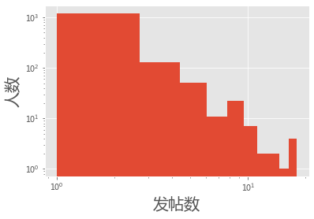
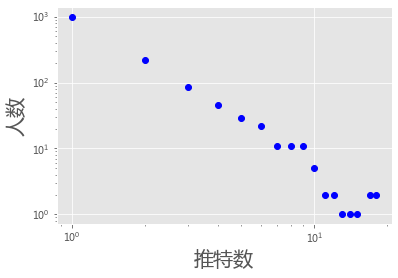
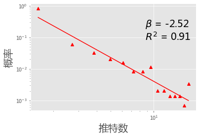
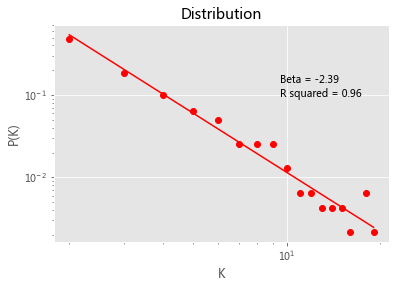

数据清洗之推特数据#
数据清洗（data cleaning）#
是数据分析的重要步骤，其主要目标是将混杂的数据清洗为可以被直接分析的数据，一般需要将数据转化为数据框（data frame）的样式。
本章将以推特文本的清洗作为例子，介绍数据清洗的基本逻辑。
清洗错误行
正确分列
提取所要分析的内容
介绍通过按行、chunk的方式对大规模数据进行预处理
同时考虑分列符和引用符#
分列符🔥分隔符：sep, delimiter
引用符☁️：quotechar
# 提示：你可能需要修改以下路径名
with open("./data/ows_tweets_sample.txt", 'r') as f:
chunk = f.readlines()
len(chunk)
2754
import csv
lines_csv = csv.reader(chunk, delimiter=',', quotechar='"')
print(len(list(lines_csv)))
# next(lines_csv)
# next(lines_csv)
2628
import pandas as pd
df = pd.read_csv("./data/ows_tweets_sample.txt",
sep = ',', quotechar='"')
df[:3]
| Twitter ID | Text | Profile Image URL | Day | Hour | Minute | Created At | Geo | From User | From User ID | Language | To User | To User ID | Source | |
|---|---|---|---|---|---|---|---|---|---|---|---|---|---|---|
| 0 | 121813144174727168 | RT @AnonKitsu: ALERT!!!!!!!!!!COPS ARE KETTLIN... | http://a2.twimg.com/profile_images/1539375713/... | 2011-10-06 | 5 | 4 | 2011-10-06 05:04:51 | N; | Anonops_Cop | 401240477 | en | NaN | 0 | <a href="http://twitter.com/">... |
| 1 | 121813146137657344 | @jamiekilstein @allisonkilkenny Interesting in... | http://a2.twimg.com/profile_images/1574715503/... | 2011-10-06 | 5 | 4 | 2011-10-06 05:04:51 | N; | KittyHybrid | 34532053 | en | jamiekilstein | 2149053 | <a href="http://twitter.com/">... |
| 2 | 121813150000619521 | @Seductivpancake Right! Those guys have a vict... | http://a1.twimg.com/profile_images/1241412831/... | 2011-10-06 | 5 | 4 | 2011-10-06 05:04:52 | N; | nerdsherpa | 95067344 | en | Seductivpancake | 19695580 | <a href="http://www.echofon.com/"... |
len(df)
2627
#df.columns #
df['Text'][0]
'RT @AnonKitsu: ALERT!!!!!!!!!!COPS ARE KETTLING PROTESTERS IN PARK W HELICOPTERS AND PADDYWAGONS!!!! #OCCUPYWALLSTREET #OWS #OCCUPYNY PLEASE RT !!HELP!!!!'
df['From User'][:10]
0 Anonops_Cop
1 KittyHybrid
2 nerdsherpa
3 hamudistan
4 kl_knox
5 vickycrampton
6 burgerbuilders
7 neverfox
8 davidgaliel
9 AnonOws
Name: From User, dtype: object
统计发帖数量所对应的人数的分布#
人数在发帖数量方面的分布情况
from collections import defaultdict
data_dict = defaultdict(int)
for i in df['From User']:
data_dict[i] +=1
list(data_dict.items())[:5]
#data_dict
[('Anonops_Cop', 1),
('KittyHybrid', 1),
('nerdsherpa', 2),
('hamudistan', 1),
('kl_knox', 1)]
import pylab as plt
plt.rcParams['font.sans-serif'] = ['Microsoft YaHei'] # 用来正常显示中文标签
plt.rcParams['axes.unicode_minus'] = False # 用来正常显示负号, 注意['SimHei']对应这句不行.
plt.style.use('ggplot')
plt.hist(data_dict.values())
plt.yscale('log')
plt.xscale('log')
plt.xlabel(u'发帖数', fontsize = 20)
plt.ylabel(u'人数', fontsize = 20)
plt.show()

tweet_dict = defaultdict(int)
for i in data_dict.values():
tweet_dict[i] += 1
plt.loglog(list(tweet_dict.keys()), list(tweet_dict.values()), 'bo')#linewidth=2)
plt.xlabel(u'推特数', fontsize=20)
plt.ylabel(u'人数', fontsize=20 )
plt.show()

import numpy as np
import statsmodels.api as sm
def powerPlot(d_value, d_freq, color, marker):
d_freq = [i + 1 for i in d_freq]
d_prob = [float(i)/sum(d_freq) for i in d_freq]
#d_rank = ss.rankdata(d_value).astype(int)
x = np.log(d_value)
y = np.log(d_prob)
xx = sm.add_constant(x, prepend=True)
res = sm.OLS(y,xx).fit()
constant,beta = res.params
r2 = res.rsquared
plt.plot(d_value, d_prob, linestyle = '',\
color = color, marker = marker)
plt.plot(d_value, np.exp(constant+x*beta),"red")
plt.xscale('log'); plt.yscale('log')
plt.text(max(d_value)/2,max(d_prob)/10,
r'$\beta$ = ' + str(round(beta,2)) +'\n' + r'$R^2$ = ' + str(round(r2, 2)), fontsize = 20)
histo, bin_edges = np.histogram(list(data_dict.values()), 15)
bin_center = 0.5*(bin_edges[1:] + bin_edges[:-1])
powerPlot(bin_center,histo, 'r', '^')
#lg=plt.legend(labels = [u'Tweets', u'Fit'], loc=3, fontsize=20)
plt.ylabel(u'概率', fontsize=20)
plt.xlabel(u'推特数', fontsize=20)
plt.show()

import statsmodels.api as sm
from collections import defaultdict
import numpy as np
def powerPlot2(data):
d = sorted(data, reverse = True )
d_table = defaultdict(int)
for k in d:
d_table[k] += 1
d_value = sorted(d_table)
d_value = [i+1 for i in d_value]
d_freq = [d_table[i]+1 for i in d_value]
d_prob = [float(i)/sum(d_freq) for i in d_freq]
x = np.log(d_value)
y = np.log(d_prob)
xx = sm.add_constant(x, prepend=True)
res = sm.OLS(y,xx).fit()
constant,beta = res.params
r2 = res.rsquared
plt.plot(d_value, d_prob, 'ro')
plt.plot(d_value, np.exp(constant+x*beta),"red")
plt.xscale('log'); plt.yscale('log')
plt.text(max(d_value)/2,max(d_prob)/5,
'Beta = ' + str(round(beta,2)) +'\n' + 'R squared = ' + str(round(r2, 2)))
plt.title('Distribution')
plt.ylabel('P(K)')
plt.xlabel('K')
plt.show()
powerPlot2(data_dict.values())

pip install powerlaw
Collecting powerlaw
Downloading powerlaw-1.4.6.tar.gz (27 kB)
Requirement already satisfied: scipy in /opt/anaconda3/lib/python3.7/site-packages (from powerlaw) (1.4.1)
Requirement already satisfied: numpy in /opt/anaconda3/lib/python3.7/site-packages (from powerlaw) (1.18.1)
Requirement already satisfied: matplotlib in /opt/anaconda3/lib/python3.7/site-packages (from powerlaw) (3.1.3)
Requirement already satisfied: mpmath in /opt/anaconda3/lib/python3.7/site-packages (from powerlaw) (1.1.0)
Requirement already satisfied: python-dateutil>=2.1 in /opt/anaconda3/lib/python3.7/site-packages (from matplotlib->powerlaw) (2.8.1)
Requirement already satisfied: cycler>=0.10 in /opt/anaconda3/lib/python3.7/site-packages (from matplotlib->powerlaw) (0.10.0)
Requirement already satisfied: kiwisolver>=1.0.1 in /opt/anaconda3/lib/python3.7/site-packages (from matplotlib->powerlaw) (1.1.0)
Requirement already satisfied: pyparsing!=2.0.4,!=2.1.2,!=2.1.6,>=2.0.1 in /opt/anaconda3/lib/python3.7/site-packages (from matplotlib->powerlaw) (2.4.6)
Requirement already satisfied: six>=1.5 in /opt/anaconda3/lib/python3.7/site-packages (from python-dateutil>=2.1->matplotlib->powerlaw) (1.14.0)
Requirement already satisfied: setuptools in /opt/anaconda3/lib/python3.7/site-packages (from kiwisolver>=1.0.1->matplotlib->powerlaw) (46.0.0.post20200309)
Building wheels for collected packages: powerlaw
Building wheel for powerlaw (setup.py) ... ?25ldone
?25h Created wheel for powerlaw: filename=powerlaw-1.4.6-py3-none-any.whl size=24787 sha256=0e7d23e9100feb4fed1092e73633e496f9c1cb767c3f8632b9d9e9d488215eda
Stored in directory: /Users/datalab/Library/Caches/pip/wheels/ee/51/38/2e0f20cf80e1a0909acdd527df2288bd9feb8356b926d7d775
Successfully built powerlaw
Installing collected packages: powerlaw
Successfully installed powerlaw-1.4.6
Note: you may need to restart the kernel to use updated packages.
import powerlaw
def plotPowerlaw(data,ax,col,xlab):
fit = powerlaw.Fit(data,xmin=2)
#fit = powerlaw.Fit(data)
fit.plot_pdf(color = col, linewidth = 2)
a,x = (fit.power_law.alpha,fit.power_law.xmin)
fit.power_law.plot_pdf(color = col, linestyle = 'dotted', ax = ax, \
label = r"$\alpha = %d \:\:, x_{min} = %d$" % (a,x))
ax.set_xlabel(xlab, fontsize = 20)
ax.set_ylabel('$Probability$', fontsize = 20)
plt.legend(loc = 0, frameon = False)
from collections import defaultdict
data_dict = defaultdict(int)
for i in df['From User']:
data_dict[i] += 1
#
import matplotlib.cm as cm
cmap = cm.get_cmap('rainbow_r',6)
fig = plt.figure(figsize=(6, 4),facecolor='white')
ax = fig.add_subplot(1, 1, 1)
plotPowerlaw(list(data_dict.values()), ax,cmap(1),
'$Tweets$')
/opt/anaconda3/lib/python3.7/site-packages/powerlaw.py:700: RuntimeWarning: invalid value encountered in true_divide
(Theoretical_CDF * (1 - Theoretical_CDF))
/opt/anaconda3/lib/python3.7/site-packages/powerlaw.py:700: RuntimeWarning: invalid value encountered in true_divide
(Theoretical_CDF * (1 - Theoretical_CDF))
清洗tweets文本#
tweet = '''RT @AnonKitsu: ALERT!!!!!!!!!!COPS ARE KETTLING PROTESTERS IN PARK W HELICOPTERS AND PADDYWAGONS!!!!
#OCCUPYWALLSTREET #OWS #OCCUPYNY PLEASE @chengjun @mili http://computational-communication.com
http://ccc.nju.edu.cn RT !!HELP!!!!'''
#!pip install twitter-text
import re
import twitter_text
# https://github.com/dryan/twitter-text-py/issues/21
#Macintosh HD ▸ 用户 ▸ datalab ▸ 应用程序 ▸ anaconda ▸ lib ▸ python3.5 ▸ site-packages
import re
tweet = '''RT @AnonKitsu: @who ALERT!!!!!!!!!!COPS ARE KETTLING PROTESTERS IN PARK W HELICOPTERS AND PADDYWAGONS!!!!
#OCCUPYWALLSTREET #OWS #OCCUPYNY PLEASE @chengjun @mili http://computational-communication.com
http://ccc.nju.edu.cn RT !!HELP!!!!'''
rt_patterns = re.compile(r"(RT|via)((?:\b\W*@\w+)+)", re.IGNORECASE)
rt_user_name = rt_patterns.findall(tweet)[0][1]#.strip(' @').split(':')[0]
rt_user_name
' @AnonKitsu: @who'
import re
tweet = '''RT @AnonKitsu: @who ALERT!!!!!!!!!!COPS ARE KETTLING PROTESTERS IN PARK W HELICOPTERS AND PADDYWAGONS!!!!
#OCCUPYWALLSTREET #OWS #OCCUPYNY PLEASE @chengjun @mili http://computational-communication.com
http://ccc.nju.edu.cn RT !!HELP!!!!'''
rt_patterns = re.compile(r"(RT|via)((?:\b\W*@\w+)+)", \
re.IGNORECASE)
rt_user_name = rt_patterns.findall(tweet)[0][1].strip(' @').split(':')[0]
rt_user_name
'AnonKitsu'
import re
tweet = '''@chengjun:@who ALERT!!!!!!!!!!COPS ARE KETTLING PROTESTERS IN PARK W HELICOPTERS AND PADDYWAGONS!!!!
#OCCUPYWALLSTREET #OWS #OCCUPYNY PLEASE @chengjun @mili http://computational-communication.com
http://ccc.nju.edu.cn RT !!HELP!!!!'''
rt_patterns = re.compile(r"(RT|via)((?:\b\W*@\w+)+)", re.IGNORECASE)
rt_user_name = rt_patterns.findall(tweet)
print(rt_user_name)
if rt_user_name:
print('it exits.')
else:
print('None')
[]
None
import re
def extract_rt_user(tweet):
rt_patterns = re.compile(r"(RT|via)((?:\b\W*@\w+)+)", re.IGNORECASE)
rt_user_name = rt_patterns.findall(tweet)
if rt_user_name:
rt_user_name = rt_user_name[0][1].strip(' @').split(':')[0]
else:
rt_user_name = None
return rt_user_name
tweet = '''RT @chengjun: ALERT!!!!!!!!!!COPS ARE KETTLING PROTESTERS IN PARK W HELICOPTERS AND PADDYWAGONS!!!!
#OCCUPYWALLSTREET #OWS #OCCUPYNY PLEASE @chengjun @mili http://computational-communication.com
http://ccc.nju.edu.cn RT !!HELP!!!!'''
extract_rt_user(tweet)
'chengjun'
tweet = '''@chengjun: ALERT!!!!!!!!!!COPS ARE KETTLING PROTESTERS IN PARK W HELICOPTERS AND PADDYWAGONS!!!!
#OCCUPYWALLSTREET #OWS #OCCUPYNY PLEASE @chengjun @mili http://computational-communication.com
http://ccc.nju.edu.cn RT !!HELP!!!!'''
print(extract_rt_user(tweet) )
None
import csv
with open("./data/ows_tweets_sample.txt", 'r') as f:
chunk = f.readlines()
rt_network = []
lines = csv.reader(chunk[1:], delimiter=',', quotechar='"')
tweet_user_data = [(i[1], i[8]) for i in lines]
tweet_user_data[:3]
[('RT @AnonKitsu: ALERT!!!!!!!!!!COPS ARE KETTLING PROTESTERS IN PARK W HELICOPTERS AND PADDYWAGONS!!!! #OCCUPYWALLSTREET #OWS #OCCUPYNY PLEASE RT !!HELP!!!!',
'Anonops_Cop'),
('@jamiekilstein @allisonkilkenny Interesting interview (never aired, wonder why??) by Fox with #ows protester http://t.co/Fte55Kh7',
'KittyHybrid'),
("@Seductivpancake Right! Those guys have a victory condition: regime change. #ows doesn't seem to have a goal I can figure out.",
'nerdsherpa')]
from collections import defaultdict
rt_network = []
rt_dict = defaultdict(int)
for k, i in enumerate(tweet_user_data):
tweet,user = i
rt_user = extract_rt_user(tweet)
if rt_user:
rt_network.append((user, rt_user)) #(rt_user,' ', user, end = '\n')
rt_dict[(user, rt_user)] += 1
#rt_network[:5]
list(rt_dict.items())[:3]
[(('Anonops_Cop', 'AnonKitsu'), 1),
(('hamudistan', 'bembel'), 1),
(('vickycrampton', 'TheNewDeal'), 2)]
获得清洗过的推特文本#
不含人名、url、各种符号（如RT @等）
def extract_tweet_text(tweet, at_names, urls):
for i in at_names:
tweet = tweet.replace(i, '')
for j in urls:
tweet = tweet.replace(j, '')
marks = ['RT @', '@', '"', '#', '\n', '\t', ' ']
for k in marks:
tweet = tweet.replace(k, '')
return tweet
安装twitter_text#
twitter-text-py could not be used for python 3
Glyph debug the problem, and make a new repo of twitter-text-py3.
pip install twitter-text
import twitter_text
tweet = '''RT @AnonKitsu: ALERT!!!!!!!!!!COPS ARE KETTLING PROTESTERS IN PARK W HELICOPTERS AND PADDYWAGONS!!!!
#OCCUPYWALLSTREET #OWS #OCCUPYNY PLEASE @chengjun @mili https://computational-communication.com
http://ccc.nju.edu.cn RT !!HELP!!!!'''
ex = twitter_text.Extractor(tweet)
at_names = ex.extract_mentioned_screen_names()
urls = ex.extract_urls()
hashtags = ex.extract_hashtags()
rt_user = extract_rt_user(tweet)
tweet_text = extract_tweet_text(tweet, at_names, urls)
print(at_names, urls, hashtags, rt_user,'-------->', tweet_text)
['AnonKitsu', 'chengjun', 'mili'] ['https://computational-communication.com', 'http://ccc.nju.edu.cn'] ['OCCUPYWALLSTREET', 'OWS', 'OCCUPYNY'] AnonKitsu --------> : ALERT!!!!!!!!!!COPS ARE KETTLING PROTESTERS IN PARK W HELICOPTERS AND PADDYWAGONS!!!! OCCUPYWALLSTREET OWS OCCUPYNY PLEASE RT !!HELP!!!!
import csv
lines = csv.reader(chunk,delimiter=',', quotechar='"')
tweets = [i[1] for i in lines]
for tweet in tweets[:5]:
ex = twitter_text.Extractor(tweet)
at_names = ex.extract_mentioned_screen_names()
urls = ex.extract_urls()
hashtags = ex.extract_hashtags()
rt_user = extract_rt_user(tweet)
#tweet_text = extract_tweet_text(tweet, at_names, urls)
print(at_names, urls, hashtags, rt_user)
#print(tweet_text)
[] [] [] None
['AnonKitsu'] [] ['OCCUPYWALLSTREET', 'OWS', 'OCCUPYNY'] AnonKitsu
['jamiekilstein', 'allisonkilkenny'] ['http://t.co/Fte55Kh7'] ['ows'] None
['Seductivpancake'] [] ['ows'] None
['bembel'] ['http://j.mp/rhHavq'] ['OccupyWallStreet', 'OWS'] bembel
作业#
提取出raw tweets中的rtuser与user的转发网络
格式：
rt_user1, user1, 3
rt_user2, user3, 2
rt_user2, user4, 1
…
数据保存为csv格式